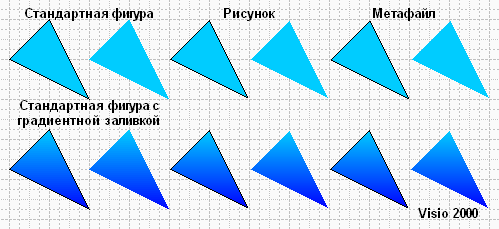
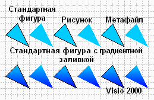
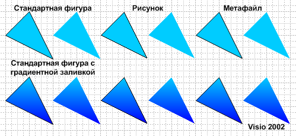
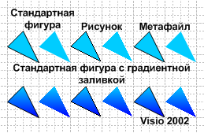
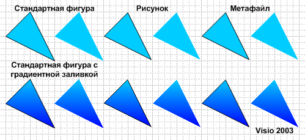
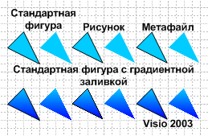
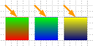

Особенности графического представления фигур в Visio.
 Почему некоторые рисунки так красивы? Почему некоторые фигуры кажутся угловатыми, а на некоторых невольно задерживается взгляд?
Начиная с версии 2002, в Microsoft Visio появился FSAA (полноэкранное сглаживание). При этом работать стало еще комфортнее, все стало более мягким и сглаженным. Нет уже тех угловатостей и “лесенок” на неровностях и углах. Но все же, в работе полноэкранного сглаживания есть некоторые нюансы.
Почему некоторые рисунки так красивы? Почему некоторые фигуры кажутся угловатыми, а на некоторых невольно задерживается взгляд?
Начиная с версии 2002, в Microsoft Visio появился FSAA (полноэкранное сглаживание). При этом работать стало еще комфортнее, все стало более мягким и сглаженным. Нет уже тех угловатостей и “лесенок” на неровностях и углах. Но все же, в работе полноэкранного сглаживания есть некоторые нюансы.
Обработка фигур с градиентной заливкой.

Рассмотрим пример фигур в Visio 2000. Здесь нет сглаживания фигур. Единственное, что здесь сглаженно, это текст. Но это уже задается настройками операционной системы и от Visio 2000 никак не зависит.

Если взглянуть поближе, то можно совершенно четко увидеть "лесенки" на фигурах...
Теперь рассмотрим пример в Visio 2002.

На первый взгляд все совершенно точно также как и в Visio 2000. Но если увеличить изображение на экране:

Картина меняется...
Видно, что стандартная фигура сглаживается. Также сглаживается и линия у этой фигуры. Метафайл этой фигуры тоже полностью сглаживается
А вот фигура с градиентной заливкой не сглаживается, только линия. С метафайлом тоже самое - сглаживается только линия.
Рисунок же, вообще никак не сглаживается...
Теперь рассмотрим пример в Visio 2003.

И снова не видно отличий в Visio 2003 от Visio 2002. Но если снова приблизить изображение:

Можно увидеть, что притерпела изменения только обработка рисунка. С заливкой ситуация осталась той же... Отсюда следует достаточно простое правило, не использовать фигуры с градиентной заливкой без линии обводки.
Возможно это будет учтено в какой-нибудь последующей версии программы.
Еще одной особенностью Visio 2002 является "вылезание" одного из цветов при градиентной заливке. Это хорошо видно, если сделать вертикальный переход зеленого в красный. При масштабе менее 100% сверху вылезает линии нижнего цвета...

Обработка линий.
В обработке линий у программы Visio всех версий есть одно странное свойство. Свойство это заключается в том, что какой бы толщины не была линия, при любом масштабе она будет отображаться на экране линией, толщиной в 1 пиксель! Проверяется очень просто: Рисуется линия толщиной в 0 pt и делается 1% масштаб. И все равно линия будет на экране... У других программ по работе с векторной графикой этого свойства нет. Где это свойство можно реально применить? К примеру, надо сделать "снимок" работы в Visio и если уменьшить масштаб, то мелкие детали станут окрашены в цвет линии обводки, т.е. была синяя фигура с зеленой линией, при малом масштабе она станет зеленой!
Вообще есть очень много странностей в графическом представлении и их тоже надо как-то учитывать (может не нам, но уж разработчикам точно стоит).
В начало раздела
Предыдущая статья
Следующая статья
Автор: Ничков Алексей (a.k.a. Digitall)